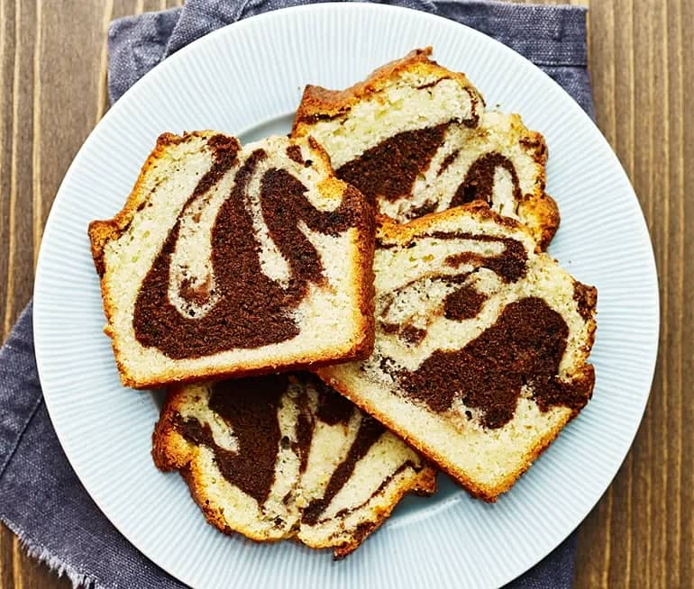

| 1 | 200 g rumstempererat smör + extra till formen |
| 2 | 3 ägg | 3 | 2 1/2 dl strösocker |
| 4 | 2 msk kakao |
| 5 | 1 msk vaniljsocker |
| 6 | 4 dl vetemjöl |
| 7 | 1 krm salt |
| 8 | 1 dl mjölk |
Gör så här
- Sätt ugnen på 175°C
- Smörj och bröa en form
- Vispa smör och socker poröst med elvisp eller i en hushållsmaskin. Rör ner ett ägg i taget
- Blanda mjöl, bakpulver och salt och vänd ner i smeten tillsammans med vätskan (mjölk eller grädde)
- Lägg ca 1/3 av smeten i en skål. Blanda den med kakaon. Smaksätt den ljusa smeten med vaniljsocker.
- Klicka hälften av den ljusa smeten i formen. Fyll på med ett lager mörk och sedan resten av den ljusa smeten. Dra med en gaffel genom smeten så att kakan blir marmorerad.
- Grädda kakan i den nedre delen av ugnen ca 1 timme (modellen på formen kan göra att tiden i ugnen kan behöva justeras). Låt svalna ca 5 minuter i formen. Lägg ett bakplåtspapper på galler och vänd upp kakan.